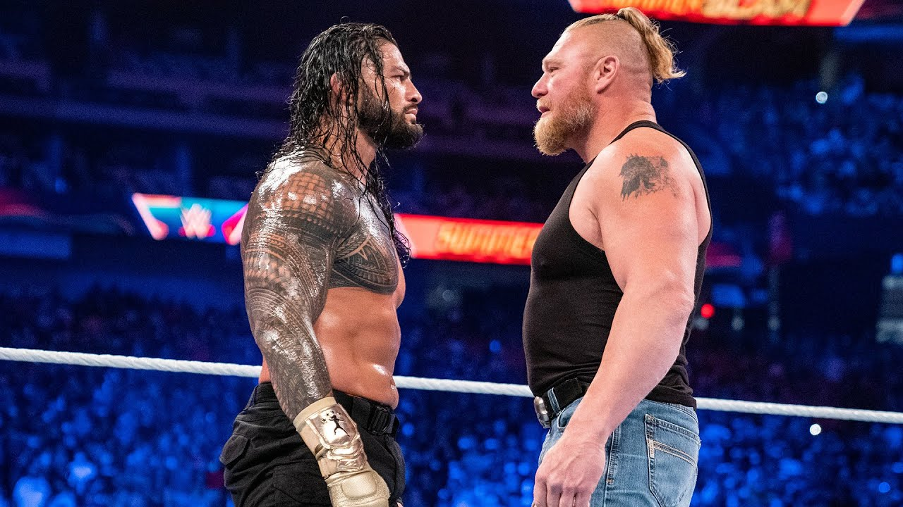

Cuando Vincent James McMahon, mejor conocido como Vince McMahon Sr, falleció, su hijo Vince se hizo cargo de la empresa. Éste último prometió que no rompería con el acuerdo territorial entre las promociones de lucha libre en Estados Unidos (de no competir entre ellas) pero al final sí lo hizo y monopolizó el negocio. En esta era se creó el evento WrestleMania y tuvo como principales exponentes a Hulk Hogan, Andre The Giant, Randy Savage y Ultimate Warrior. Esta fue una de las épocas más exitosas en la historia de la empresa porque fue la que los catapultó a la expansión mundial y dejar de ser una simple promotora local.

Cuando Hogan y compañía rebasaron los 40 años de edad, Vince McMahon empezó a buscar nuevos talentos que se convirtieran en los luchadores estelares de la empresa. Bret Hart, Shawn Michaels, Razor Ramón, Owen Hart y The Undertaker fueron los elegidos para mantener a la WWE en la cima del negocio. No obstante, el hecho de que contrataran a nuevas superestrellas, también desembocó en el despido de otras, que emigraron a las promociones independientes que competían directamente con WWE. Así fue como Hulk Hogan, Ultimate Warrior y otros más, firmaron contrato con WCW para que se crearan las ‘Monday Night Wars’.

La Attitude Era se caracterizó por ser la más polémica en la historia de la empresa. Esta abarcó temas sexuales y políticamente incorrectos. Tal ejemplo fue cuando Kurt Angle dijo que podría luchar contra Jesucristo, cuando Stephanie McMahon comparó el atentado del 11 de septiembre con el escándalo de los esteroides de los años 80 y el segmento de Edge con Lita teniendo relaciones sexuales en medio del ring. Los combates permitían que hubiera sangre en el cuadrilátero, luchas con el ring envuelto en fuego, palabras altisonantes y la sexualización de divas para atraer al público masculino. La programación cambió de ser para todo público a +14 y sus principales figuras fueron Stone Cold Steve Austin, The Rock, Chris Jericho, Edge, Christian, Triple H con D-X, entre otros.

Esta era fue una transición entre las superestrellas del pasado y las nuevas. En ella, hubieron referentes tanto de la época pasada como de la que recién se daba a conocer, entre los que destacan Chris Jericho, Triple H, Mick Foley, Big Show, Edge y Eddie Guerrero por el lado de los veteranos. Por su parte, John Cena, Randy Orton, Batista y Brock Lesnar fueron los nuevos luchadores que años después, fueron las atracciones principales de la compañía.

La PG fue una de las más criticadas por los fans, ya que dejó de lado todo lo políticamente incorrecto y se enfocó en llegar al público más joven. John Cena dejó de lado su personaje de Dr. Of Thuganomics y empezó a ser el ‘Superman’ de la lucha libre que atraía a los niños. A su vez, Randy Orton fue el villano principal de la empresa y máximo enemigo de Cena. Sin embargo, la era PG tuvo un realce cuando CM Punk soltó su ‘Pipebomb’ donde afirmaba que WWE progresaría hasta el día que Vince McMahon muriese, lo cual rompió con la ‘cuarta pared’ al nombrar a otras empresas de lucha libre como NJPW y ROH.

John Cena dejó de ser la cara de la empresa por su avanzada edad y sus compromisos en Hollywood. Además, el avance de la tecnología y que los fans pudieran saber lo que los luchadores hacían en su vida cotidiana, hizo que WWE enfocara su contenido a algo más real para mantener la atención de los fanáticos. Aquí, se impulsaron talentos como AJ Styles, Roman Reigns, Dean Ambrose y Seth Rollins.

Esta es la era más reciente de WWE y que continúa hasta nuestros días. Aunque no se sabe si seguirá cuando Endeavor tome el mando de la compañía. The New Era es recordada por ser un ‘borrón y cuenta nueva’ de los errores del pasado para abrir camino a nuevas superestrellas, nuevos mercados, nuevos eventos y estipulaciones. Prueba de ello fue el regreso de la estipulación ‘WarGames’ en Survivor Series y los eventos realizados en Arabia Saudita (Crown Jewel y Super Showdown). En esta era, las caras más reconocidas son Roman Reigns, Gunther, Charlotte Flair, Becky Lynch y Cody Rhodes.
